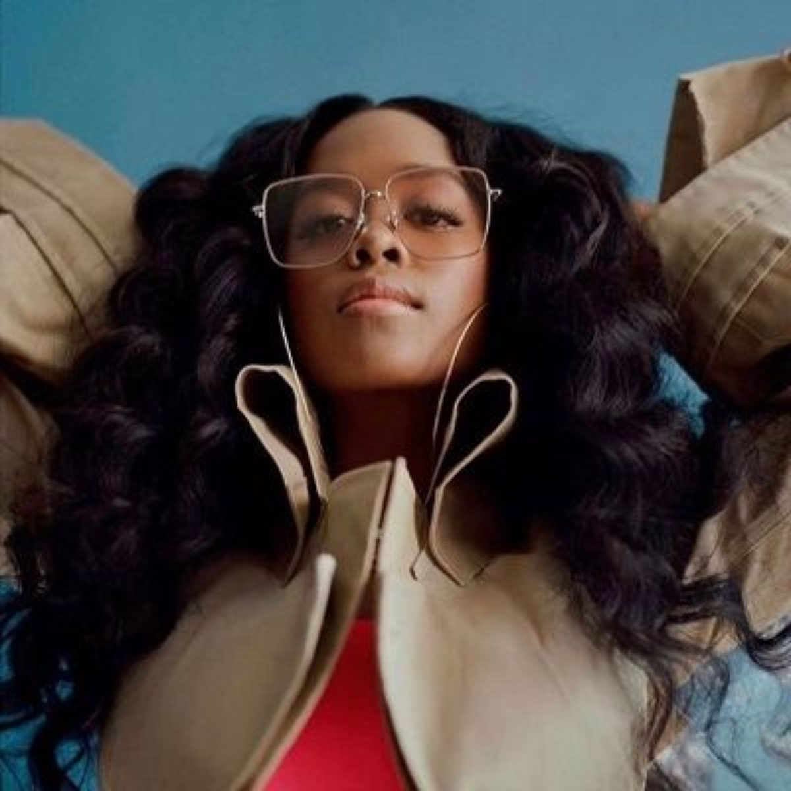

Gabi Wilson, or as many know her by her stage name, H.E.R., is mostly anonymous, something so rare to see in the R&B industry as well as in the 21st centry. She has a signature look of her volumonious curls and shades.
H.E.R stands for Having Everything Revealed.The reason for anonymity was she didn't want her success to be based off her looks. She didn't want the distractions of her personal life to be the focus, when it should be the music.
H.E.R. explains her goal of her sound and place in music. “I've been trying to fit in with what's happening now while still being me,” she says. “At the time, there were no female artists that were kind of doing trap-R&B with lyrics that weren’t superficial. You had people like Drake and Bryson Tiller who appealed to the emotions but still had a moody, vibey bounce to their music, and that’s what I did with ‘Volume 1’ and ‘Volume 2.’ We are seeing all of these artists staying true to themselves and showing the record labels that R&B has not died. People are gravitating toward the music that reminds them of [artists like] Brandy, Monica and SWV that made ’90s R&B so special.”
R&B star Tank agrees and thinks H.E.R. can one day be up there with the greats. “There’s not that many R&B artists who can stand flat-footed, with a guitar and just sing their heart out and command an audience,” he says. “Seeing someone like H.E.R. — who is a very core R&B artist — getting a real shot, it opens the door for a whole lot more R&B to break through.”

“I Used to Know Her,” sees Wilson stretch her musicality. “It’s more musical, a little bit less of the trap sound,” she says of the EPs that serve as preludes to her forthcoming debut. “I really wanted to release something because I haven't been really able to get in the studio and complete this album like I've been wanting to.”